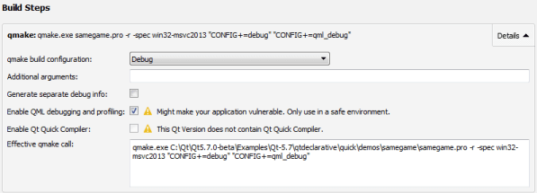
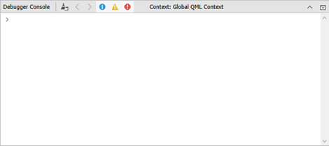
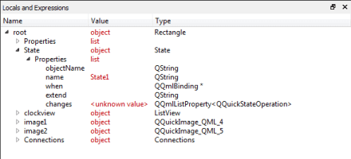

Debugging Qt Quick Projects
Note: You need Qt 5.0 or later to debug Qt Quick projects.
For an example of how to debug Qt Quick Projects, see Debugging a Qt Quick Example Application.
Setting Up QML Debugging
The process of setting up debugging for Qt Quick projects depends on the type of the project: Qt Quick UI or Qt Quick Application, and the Qt version used.
To debug Qt Quick UI projects, select the Enable QML check box in the Debugger Settings in Projects mode Run Settings.
To debug Qt Quick Applications:
- Debugging is enabled by default for Qt 5.0, or later.
You might have to compile the library first, by selecting the Compile link.

Note: Debugging requires opening a socket at a TCP port, which presents a security risk. Anyone on the Internet could connect to the application that you are debugging and execute any JavaScript functions. Therefore, you must make sure that the port is properly protected by a firewall.
- In the Run Settings, Debugger Settings section, select the Enable QML check box to enable QML debugging.
- Select Build > Rebuild Project to clean and rebuild the project.
- To debug applications on devices, check that Qt 5.0, or later, libraries are installed on the device and select the corresponding kit for the device before you start debugging.
Mixed C++/QML Debugging
To debug both the C++ and QML parts of your application at the same time, select the Enable C++ and Enable QML checkboxes for both languages in the Debugger Settings section in the project Run Settings.
Starting QML Debugging
To start the application, choose Debug > Start Debugging > Start Debugging or press F5. Once the application starts running, it behaves and performs as usual. You can then perform the following tasks:
- Debug JavaScript functions
- Execute JavaScript expressions to get information about the state of the application
- Inspect QML properties and JavaScript variables and change them temporarily at runtime
To debug already running applications:
- Build the application by using the
appropriate configuration parameters (if you build the application with
Qt Creator, it automatically uses the correct configuration):
CONFIG+=qml_debug - Start the application with the following arguments:
qmljsdebugger=port:<port>[,host:<ip address>][,block]Where
port(mandatory) specifies the debugging port,ip address(optional) specifies the IP address of the host where the application is running, andblock(optional) prevents the application from running until the debug client connects to the server. This enables debugging from the start. - Select Debug > Start Debugging > Attach to QML Port.
Choose the kit configured for the device where the application to be debugged is running. The port number to use is displayed in the standard output when the application starts.
Debugging JavaScript Functions
You can use the Qt Creator Debug mode to inspect the state of your application while debugging. You can interact with the debugger by:
- Setting breakpoints
- Viewing call stack trace
- Viewing local variables and function parameters
- Evaluating expressions at run time
Executing JavaScript Expressions
When the application is interrupted by a breakpoint, you can use the Debugger Console to execute JavaScript expressions in the current context. To open it, choose Window > Output Panes > Debugger Console.

For more information about using the console, see Debugger Console.
Applying QML Changes at Runtime
When you change property values in the Debugger Console or in the Locals or Expression view, they are immediately updated in the running application, but not in the source code.
Inspecting Items
While the application is running, you can use the Locals and Expressions views to explore the QML item structure.

To keep the application visible while you interact with the debugger, select Debug > Show Application on Top.
You can view a QML item in Locals and Expressions in the following ways:
- Expand the item in the object tree.
- Select the item in the code editor.
- Select Debug > Select to activate selection mode and then click an item in the running application.
To change property values temporarily, without editing the source, double-click them and enter the new values. You can view the results in the running application.
Inspecting User Interfaces
When you debug complex applications, you can jump to the position in code where an item is defined.
In the selection mode, you can click items in the running application to jump to their definitions in the code. The properties of the selected item are displayed in the Locals view.
The Select tool will be enabled either if your application is
using Qt 5.7 or later, or if your application is using an earlier
version of Qt and is based on the QQuickView class.
You can also view the item hierarchy in the running application:
Double-click an item in the running application to cycle through the item stack at the cursor position.
To switch out of the selection mode, toggle the Select menu item.
To move the application running in Qt QML Viewer to the front, select Debug > Show Application on Top.
© 2018 The Qt Company Ltd. Documentation contributions included herein are the copyrights of their respective owners. The documentation provided herein is licensed under the terms of the GNU Free Documentation License version 1.3 as published by the Free Software Foundation. Qt and respective logos are trademarks of The Qt Company Ltd in Finland and/or other countries worldwide. All other trademarks are property of their respective owners.